╱𝄅､ mrrp
(⁰､ ₀ フ
𝄅､ 乀 ,า
ししこ丿ノ
_._ _,-'""`-._
(,-.`._,'( |\`-/|
`-.-' \ )-`( , o o)
`- \`_`"'-
Anywayzz this is all of the still online games. Even if some of them are suuuper lame now lol XP
.io games
! April 2015 - Agar.io is released as a free-to-play multiplayer online game.
! 2016 - Inspired by the rising popularity of Agar.io, Slither.io is released and quickly gains popularity.
! 2016 - 2020 - .io games hit its peak in popularity for its multiplayer top-down game view format.
! 2021 - due to the rise of popularity in mobile and video games as well as lack of updates and new content, .io games start losing popularity.
! Today - Most .io games are still accessible to this day.
! Notable mention: Something very important to note is that .io games did not rely on Flash to run, meaning that they were unaffected by the shut down of Flash in 2020.
|
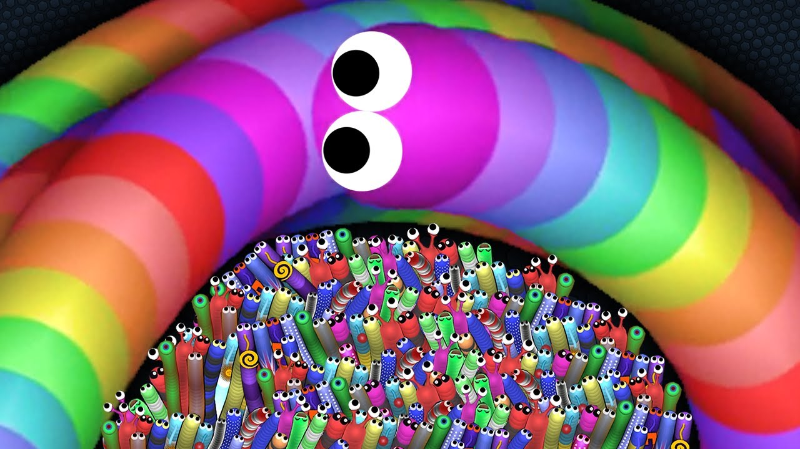 |
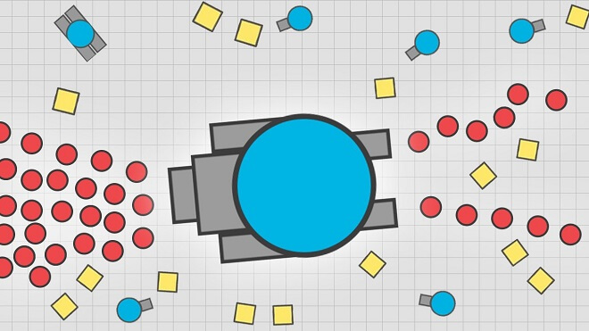 |
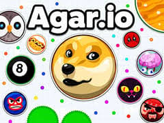 |
ANIMAL JAM!!!! X3
! September 9, 2010 - beta testing ends and WildWorks opens Animal Jam to the general public.
Around the same time, it partnered with National Geographic and was allowed to use the National Geographic name, logo, and content.
! 2013 - 2017 - Animal Jam hits its peak with the range of registered users being in the 100 millions.
! August 18, 2015 - Animal Jam Play Wild (the 3D mobile version of Animal Jam) ends its beta testing and opens to the general public.
! 2017 - Animal Jam and National Geographic’s partnership ends early.
! May 2020 - aMAYzing Migration. The tragic Adobe Flash shutdown. Animal Jam changes from an in browser game to a desktop game. Animal Jam’s name is rebranded to Animal Jam Classes while Animal Jam Play Wild (the mobile version) is rebranded to Animal Jam.
Additional Information: A huge part of Animal Jam was the memberships. Many if not most of the game’s features were blocked behind a membership paywall. One of the most noticeable features was the ability to chat freely. As a game made for a target audience of children around the ages of 12, Animal Jam has a very heavy chat censorship. Many messages get blocked if the game deems it to be inappropriate. There were three tiers of free chat:
- Text box chat - players could only communicate with pre-made text options.
- Limited chat - players could type but if text was deemed inappropriate it would not allow the user to send the message.
- Free chat - players could type and send anything but if the chat was deemed inappropriate after being sent it would be removed.
* It is very important to note that the only people that have access to free chat are members.
|
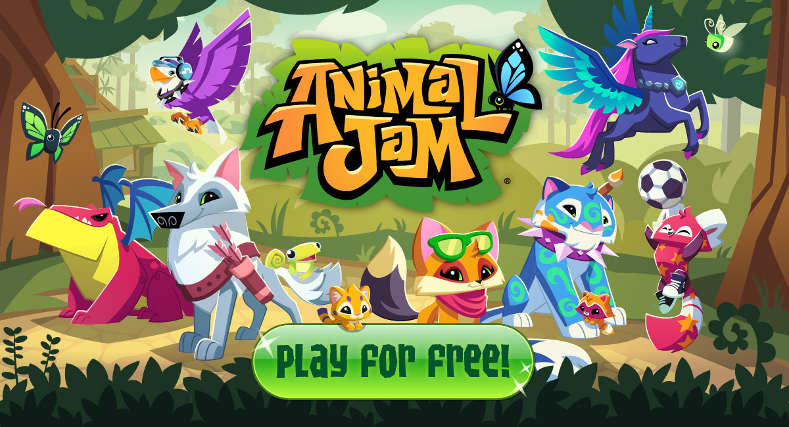 |
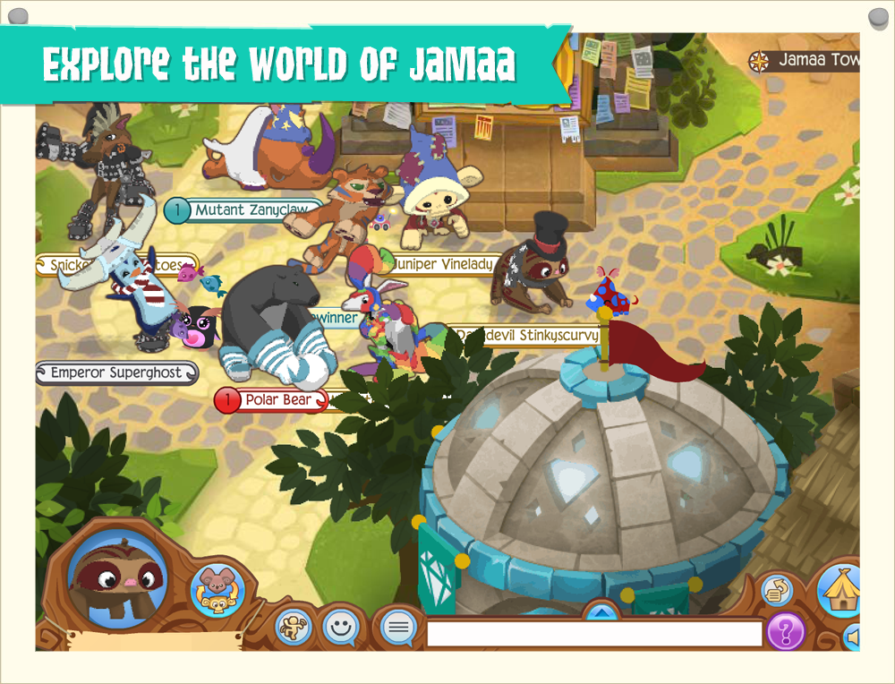 |
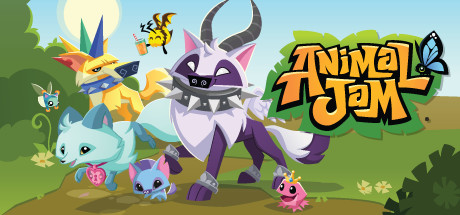 |
Poptropica
! June 5, 2007 - Poptropica is Launched as an educational, child-friendly game.
! 2011 - Time lists Poptropica in "50 Websites that make the Web Great"
! 2012 - Poptropica reaches 75 million registered players.
! 2015 - Poptropica is sold to Sandbox Networks.
! 2020 - Flash shuts down. Poptropica moves to HTML5
! 2022 - Poptropica releases a bundle on Steam containing some of their original items.
! 2024 - Poptropica moves to CoolMathGames, where it sits today
! Today - Poptropica is currently still online with coolmathgames, but it's steadily declining playerbase and lack of real updates has kept the game
essentially on life support while few new people register to play. Servers lay almost entirely empty, leaving many to wonder if this game can be saved at all.
|
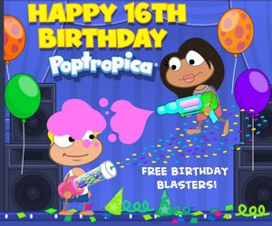 |
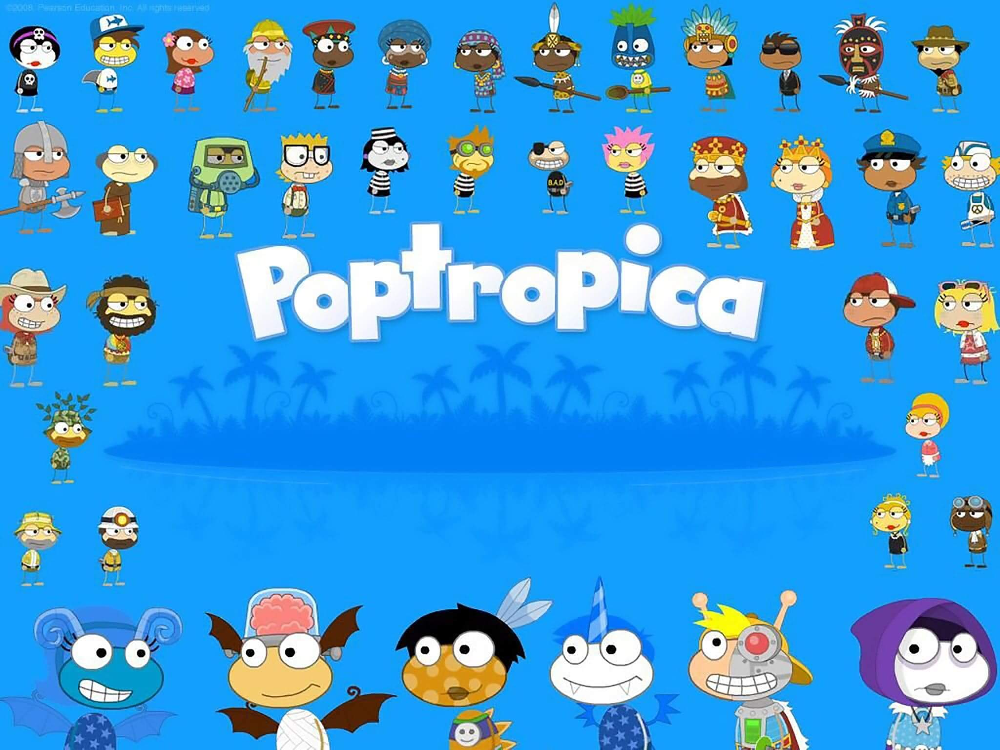 |
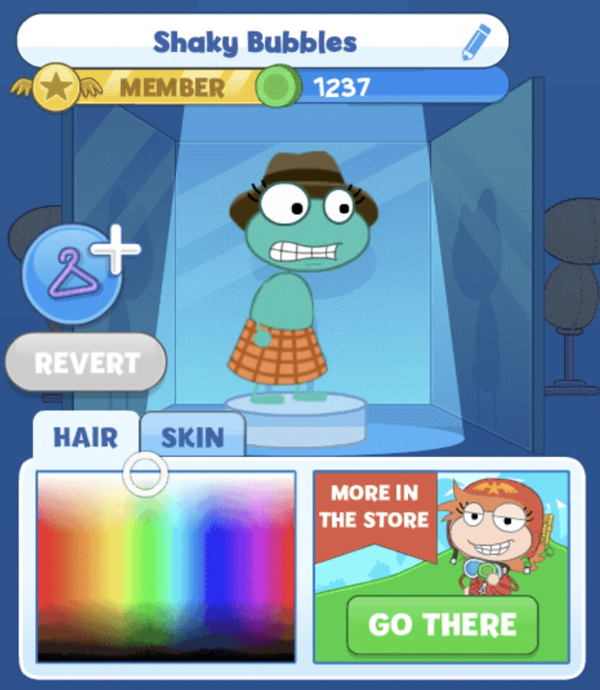 |
Neopets
! November 15, 1999 - Neopets is launched, by Christmas is reaches over 600,000 users online
! 2001-2005 - Neopets surges in "stickiness" with users spending more and more time per week and per month on that site more than any other site.
! 2005 - Viacom purchases Neopets and focuses on banner advertisements
! 2007 - Neopets updates and allows for the customization of pets using real cash to purchase virtual items.
! 2014 - JumpStart acquires Neopets and begins moving servers. The game experiences many bugs upon moving servers
! June 2015 - During the last weekend of June 2015, the chat filters break. The chat is flooded with age-inappropriate messages
! 2017 - JumpStart is bought by NetDragon. NetDragon begins to develop plots for the first time since JumpStart bought Neopets
! 2020 - Neopets moves to HTML5 after the Flash Shutdown. NetDragon announces a mobile app for Neopets but it is later scrapped
in favor of a mobile-friendly browser version.
! 2021 - Neopets announces a Metaverse NFT project. The project is cancelled in 2023 due to backlash.
! 2023 - Neopets is bought from NetDragon and is streamlined for modern play. It reaches the highest playerbase since being bought by NetDragon. Announcements for a mobile app are made.
! Today - Though Neopets is active, it's servers are still fairly sparse, with most users playing for nostalgia or to check in on old pets.
Though it's online, over half of all users are above the age of 18.
|
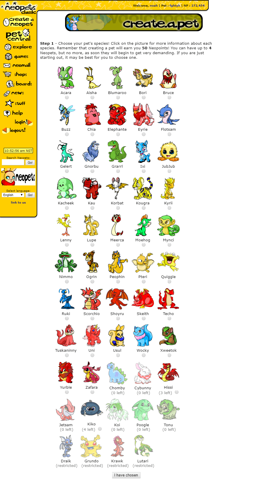 |
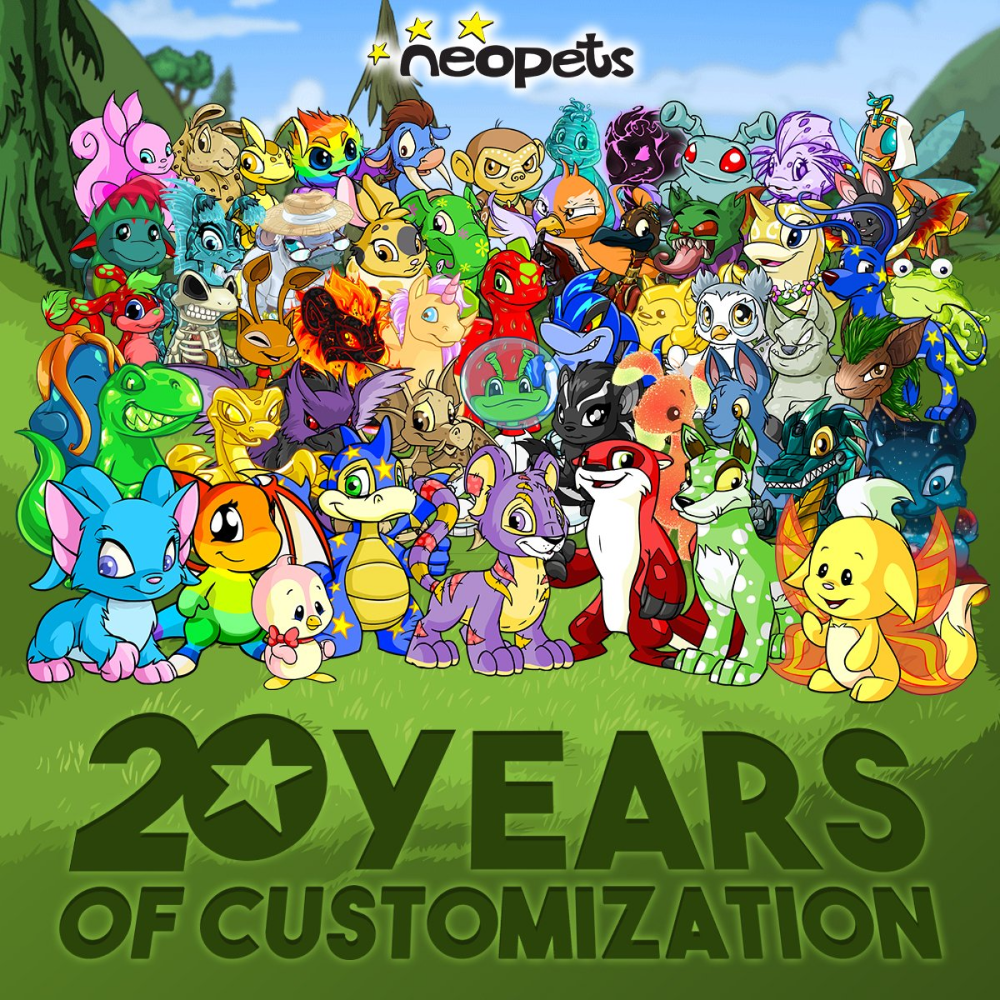 |

|